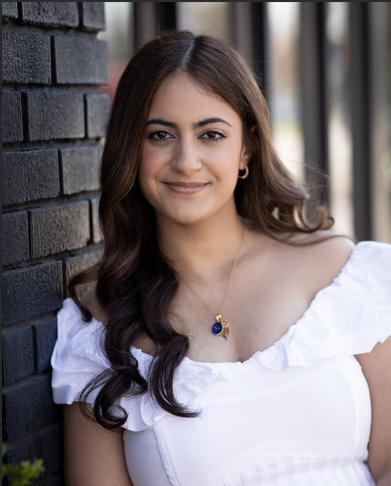

President
Hi! I’m Navya Bhardwaj, a Computer Science major at MSU with minors in Data Science, CMSE, and Business. I chose CS because I love the problem-solving process and how it allows me to build tools that make a real impact. WIC has been a space where I’ve felt genuinely supported and encouraged to grow, both professionally and personally. It’s helped me build confidence in tech spaces, and now, as an e-board member, I hope to do the same for others. I’m also a co-director of SpartaHack, have worked as an Undergraduate Learning Assistant, and interned at Morgan Stanley as a Technology Summer Analyst. Outside of academics and extracurriculars, I enjoy going to the gym, doomscrolling till I sleep and actually sleeping after
Vice President
Hello! My name is Sitara Baxendale and I am an incoming senior here at MSU studying Computer Science Engineering with a minor in Cognitive Science. I chose to study CSE because of my passion for coding and the versatility the degree offers in career paths post graduation! I am currently a Admin for the Women in Engineering Outreach Office for K-12 Coding Camps here on campus. Furthermore, this summer 2025 I am interning at Bank of America in Chicago, IL as a Software Engineering Intern. My favorite part about WIC is meeting and becoming friends with girls in the same field as I, as well as the opportunities the club provides such as meeting with companies and attending conferences. With that, my favorite WIC memory is the Grace Hopper Conference!
Treasurer
Hi, my name is Olivia Whitlock and I am WIC's treasurer for the 2025-2026 school year! I am a junior majoring in computer science, and this is my third year in WIC. I joined WIC in the fall of my freshman year to meet more women in computer science since I hadn't really started taking CSE classes yet. WIC has given me so many of my friends that I see both in and outside of class, and has truly given me a strong base of support. Outside of WIC, I am a member of the sorority Pi Beta Phi here on campus. Some hobbies of mine include reading (my favorite genre is sci-fi), listening to music (Lana Del Rey is my fav), and scrapbooking. I'm so excited to be able to give back to the club that has already given me so much!
Secretary
Hi! I'm Arita, a sophomore studying Computer Science with a minor in ICT4D. I love CS because of how versatile and impactful it is. Technology can solve real world problems in so many ways and I want to be a part of that. My favorite part of WIC is the supportive community and meeting new people!
Outreach Chair
Hi! I’m Sarika Kona, a junior majoring in Computer Science and this year’s Outreach Chair for WIC! As Outreach Chair, I focus on organizing events that introduce young students to computing. I am eager to create impactful experiences for both volunteers and students. One of my favorite things about WIC is the strong sense of community, it’s such a welcoming and supportive space! Outside of WIC, I enjoy playing tennis, pickleball, and spending time with friends. I’m looking forward to such an amazing year with everyone!
Corporate Relations Chair
Hi everyone! My name is Sarah Leatch and I am the current Corporate Relations Chair for WIC. I am studying computer science with a minor in business and a concentration in AI. I love the business side of tech and hope to end up in a project management role! Outside of WIC I love the fitness classes at the MSU recreation center, thrifting, and trying out a whole bunch of new coffee places. I also participate in hackathons with some of my fellow WIC members! Summer 2026 I am interning with Auto-Owners insurance as a Business Analyst. My favorite part about WIC is meeting and connecting with new people within the field, and I can’t wait for this next school year! Feel free to reach out whenever!
Webmaster
Hi everyone! My name is Heena, and I'm so excited to serve as the Webmaster for WIC this year! I'm a current junior majoring in Computer Science and minoring in Business and this is my third year being in WIC. My favorite thing about WIC is the incredibly supportive community we have as well as the opportunity to meet so many inspiring people every week! Outside of school I love to read, watch TV, listen to music, and spend time outdoors. I'm really excited to contribute to the growth of WIC this year and see what we can accomplish together! If you ever want to connect, don't hesitate to reach out!
Lean In Chair
Hi! I’m Safa, a junior studying Computer Engineering with a concentration in Smart Systems. I’m interested in automotive technology, robotics, embedded systems, and how hardware and software come together to solve Connected Car Engineering team, and previously interned at TI Fluid Systems. In my free time, I enjoy photography, volleyball, working out, and finding new coffee shops. As Lean In Chair, I’m excited to help create a welcoming environment where members can connect, support one another, and grow together.
Social Media Manager
Hi! Im Sabrina, a senior studying Computer Science with a minor in Spanish. My favorite thing about WIC is the community of supportive women in technology! In my free time I like to listen to podcasts, curate boards on Pinterest and try new coffee shops with friends. I am so excited to serve on E-Board, say hi to me at our meetings!
Community Relations Chair
Hi! My name is Bevin, and I'm thrilled to be serving as this year's Community Relations chair! I joined WIC during my sophomore year while transitioning from a Business major to Computer Science, and I’ve loved being surrounded by such talented women who continue to inspire me. I am currently an IT assistant for the MSU History Department as well as a Customer Service Team Lead for the Breslin Center. I love getting to cheer us on at basketball and football games!! I also love swimming, cycling, baking, live music, and trying new foods. My favorite WIC memory was attending the SWE conference last year in Chicago! I'm so excited to help grow our community and make a positive impact on WIC’s future!
The WIC Extra Mile Leadership Award is given each year to a member of the WIC Executive Board whose outstanding leadership in the last year has contributed towards improving the club. The WIC President and WIC Vice President nominate an awardee, who must be approved by the WIC Advisors. The WIC President, WIC Vice President, previous EMLA recipients, and students who could graduate in the current academic year are ineligible. The purpose of the award is to recognize outstanding leaders and encourage them to run for other leadership positions in the coming years.
2024 - Sania Hasan
2023 - Ashlin Riggs
2020 - Zosha Korzecke
2019 - Camille Emig & Sarah Johanknecht
2018 - Harshita Das
2017 - Lauren Allswede
2016 - Courtney Irwin
2015 - Neha Gupta
2014 - Ashlee Deline
2013 - Chelsea Carr & Kaitlin Davis
2012 - Mairin Chesney
2011 - Cassi Miller & Kathryn Bonnen
2010 - Meghan McNeil
.png)


Safa Al-Murib
Computer Engineering '28
Social Chair
Hi! I’m Safa, a Computer Engineering major with a Business minor at MSU. I’ve always loved the challenge of problem-solving and creating things that make a difference, which naturally drew me to engineering. Over time, I found a special interest in AI, automation, and how tech can be used to build smarter systems and meaningful solutions. On campus, I’m the Secretary of the MSU AI Club, a CoRe Peer Leader for first-year engineering students, and now the Social Chair for Women in Computing! I love being part of communities that support growth, collaboration, and empowerment—WIC has been one of my favorite spaces for that. I’m excited to plan inclusive, fun events that help members connect and feel more at home in tech. Outside of class, I enjoy photography, playing and coaching volleyball, and trying out new cafes. My goal is to continue creating spaces where people feel welcome, supported, and inspired to lead—whether that’s through mentorship, leadership, or simply showing up for others.